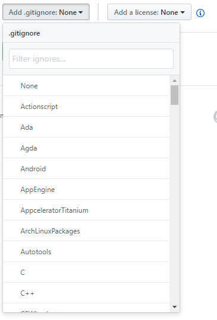

Stencil components
The button as below was made in educational purposes by design from
https://github.com/new
Git repo:
https://github.com/KEMBL/StencilJs.playground
StencilJs components
Demo text to show that dropddown opens over it, so try to push button.
Reference image
